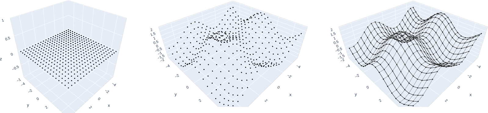

Graphing the \(p\)-Norm Unit Ball in 3 Dimensions
Introduction
What's the \(p\)-norm?
If \(\vec x\) is in \(\mathbb R^n\), i.e., \(\vec x = (x_1, x_2, \ldots, x_n)\), then the \(p\)-norm of \(\vec x\), denoted \(\|\vec x\|_p\), is defined for \(p \geq 1\) by
\[ \|\vec x\|_p = \left(\sum_{k = 1}^n |x_k|^p\right)^{1/p} \]
Perhaps a more intiuitive way of thinking of this is, if \(\vec x\) is in \(\mathbb R^3\) for example, then:
\[ \begin{align*} \|\vec x\|_1 &= |x_1|^{\phantom{1}} + |x_2|^{\phantom{1}} + |x_3|^{\phantom{1}} \\ \|\vec x\|_2^2 &= |x_1|^2 + |x_2|^2 + |x_3|^2 \\ \|\vec x\|_3^3 &= |x_1|^3 + |x_2|^3 + |x_3|^3 \\ &\ \,\vdots \\ \|\vec x\|_p^p &= |x_1|^p + |x_2|^p + |x_3|^p \end{align*} \]
What's the unit ball?
The unit ball describes the set of all points whose distance from the origin is 1. So if our distance is induced by the \(p\)-norm, then the unit ball is the collection of \(\vec x\) such that \(\|\vec x\|_p = 1\). The unit ball is often denoted \(\mathcal B\):
\[ \mathcal B = \left\{\vec x : \|\vec x\| = 1\right\}. \]
A common exercise in introductory analysis is graphing the \(p\)-norm unit ball in 2 dimensions for various values of \(p\).
Visualizations of the unit ball in 3 dimensions are significantly less common.
Why?
Well, a mathematician would say that once we understand an object in 1 dimension and in 2 dimensions, then we understand it in all dimensions, and so examining \(\mathbb R^3\) is redundant, at best. I say pictures are fun and interesting, and nobody learning a new mathematical concept has ever wished for fewer pictures. So, here's what the 3-dimensional unit ball looks like for various values of \(p\):
Perhaps one reason the 3D unit ball isn't visualized often is that it's a pain in the ass to graph.
Sure—graphing a sphere isn't hard, graphing a cube isn't hard, and graphing an octahedron isn't hard. But apparently graphing all three and every visual representation between them with one function is the opposite of "not hard."
In 2D, you can just dust off the trusty 'ol polar coords, wipe your hands, and call it a day. But wow, is this not trivial in 3D.
I'm going to walk through my problem solving process below—I'll talk about each method I tried, why I thought it would work, why it didn't work, and how I eventually solved this problem (if problems in computer science can ever truly be considered "solved").
Method 1: Compute \(z\) from a \((x, y)\) Mesh Grid
With a lot of 3D graphing problems, what makes the most sense is to generate a grid of evenly-spaced \(x\) and \(y\) values, then to calculate \(z\) for every \((x, y)\) pair. In this way, you end up with a set of \((x, y, z)\) points which, once connected to their nearest neighbors, form a surface.
Approaching this problem this way turns out to be a terrible idea. If you're smarter than me, then you can probably already see why. But since I'm not smarter than me, I had to barrel through this whole mess first to figure it out.
First, we need to figure out a formula for \(z\) that depends on \(x\) and \(y\). Since we're graphing the unit ball for variable \(p\), our points \((x, y, z)\) are going to have to satisfy \(\|(x, y, z)\|_p = 1\). So, we pull out the definition of the \(p\)-norm and do some minor rearrangements.
\[ \begin{align*} \|(x, y, z)\|_p^p &= |x|^p + |y|^p + |z|^p \\ 1^p &= |x|^p + |y|^p + |z|^p \\ 1 &= |x|^p + |y|^p + |z|^p \\ |z|^p &= 1 - |x|^p - |y|^p \\ z &= \pm \big(1 - |x|^p - |y|^p\big)^{1/p} \end{align*} \]
Great!! So, the plan is to generate a grid of \(x\) and \(y\) values ranging from -1 to 1, then calculate the positive \(z\)-value for any \((x, y)\) pair. If some \((x,y)\) pair is outside of our boundary (i.e., \(x\) and \(y\) are large enough that there's no \(z\) such that \(|x|^p + |y|^p + |z|^p = 1\)), then we'll just let the \(z\) value for that point be NaN, and our graphing utility will ignore it. We expect our points will look something like this (in the \(p = 2\) case):
Then when we're done, we'll just duplicate our valid points with negative \(z\)-values to fill out the bottom hemisphere.
# Import necessary libraries
import numpy as np
import plotly.graph_objects as go
import ipywidgets as widgets
smoothness = 6 # Any integer geq 3
contour_density = 4 # Any integer geq 1 and leq smoothness
# Ensure our graphs pick up corners & contour lines correctly
num_steps = 2**smoothness + 1
jump = 2**(smoothness - contour_density)def coords(p):
# Generate (x,y) mesh grid
x = np.linspace(-1, 1, num_steps)
x, y = np.meshgrid(x, x)
# Initialize z full of NaN values
z = np.full_like(x, np.nan)
# Compute z at valid points
for i, j in np.ndindex(x.shape):
temp_z = 1 - np.abs(x[i, j])**p - np.abs(y[i, j])**p
if temp_z >= 0:
z[i, j] = temp_z**(1/p)
# Throw on the negative z-values
x = np.vstack((x, np.flipud(x)))
y = np.vstack((y, np.flipud(y)))
z = np.vstack((z, -np.flipud(z)))
return (x, y, z)# Generate figure
X, Y, Z = coords(p)
fig = go.Figure(go.Surface(
x=X,
y=Y,
z=Z,
colorscale='Viridis',
showscale=False
))
fig.update_layout(showlegend=False)That . . . almost worked. The graph seems accurate wherever it exists—the problem is the places where it doesn't. \(p = 100\) is almost comical.
Method 1.1: A Bad Addendum to a Bad Idea
For a bit, I was pretty obstinate about the fact it half-worked.
The unit ball is perfectly symmetrical with regards to each of the axes, so I figured if I layered a bunch of half-working things over each other in the right way, I could probably get something that full-worked!
def coords_patchwork(p):
X, Y, Z = coords(p)
# Patch together our X, Y, Z symmetrically to cover the gaps
X = np.hstack((X, Z, Y))
Y = np.hstack((Y, X, Z))
Z = np.hstack((Z, Y, X))
return (X, Y, Z). . . That's not how it worked.
Look at this.
Look at \(p = 100\).
Look at the surface of \(p = 1\).
It's ugly, it's choppy, it's glitchy—it's disgusting. The edges of the patchworked surfaces are causing that jittery image for low \(p\), and for large \(p\), open gaps are still showing up around the edges.
Why isn't it working?
There's two main problems occuring here. One is due to the way our graphing utility draws surfaces, and the other has to do with the points we're ignoring (the NaN \(z\)-values).
To understand the first problem, we need to understand how 3D surfaces are drawn. Most 3D plotting functions take \((x, y, z)\) data points in the format of three 2-dimensional arrays:
In the above image, our graphing utility would read these three arrays as a collection of six total points:
Lines are drawn between points that lie adjacent to each other in these arrays, not based on which \((x, y, z)\) values are closest to each other in space.
Because of the bordering NaNs in our \(z\) array, and because of the way that we appended the negative points to our original arrays, the graphing utility is unable to connect all of our points and (mostly) settles for making two disjoint surfaces instead. Sometimes it can draw some borders, but it's unable to draw lines between every border point.
However, even if we were able to solve the point connection issues with the arrays, there would still be other problems.
This method doesn't capture the curvature of edges and corners well for high values of \(p\). Since we're working with a finite-sized mesh, our step size can only be so small. Consider an \(x\)-\(z\) cross-section of \(p = 10\) as an example, for \(y\) very close to but not equal to 0:

In this image, since \(y\) is just a little larger than 0, we don't pick up the point \(x = 1\), since \(1^p + \varepsilon^p > 1\), and so no \(z\)-value exists such that \((1, \varepsilon, z)\) is on the surface of our unit ball. So, we jump from NaN to a very large \(z\) value when we increment \(x\), completely skipping past the exact curvature we want to visualize.
So, no matter our step size, after a certain \(p\)-value, we're not picking up any of the fine detail of our edges. We're always chopping off essential information, making entire sides of our object flat when they shouldn't be. Take the case \(p = 1.5\), for example: the corners of our object around \(z = 0\) should be pretty pointy. But even if we've solved our connectivity issue, we would still end up with some object that looks like it's been filed flat around its equator. This method loses detail exactly where we need it most.
Next step?
So, apparently plotting surfaces is like laying shingles: it has to be done in a systematic fashion. We can't just toss down points in any order we want—we need to move methodically through space, connecting points of our surface as we progress. Moreover, we want the same granularity in the \(z\) direction as in the \(x\) and \(y\) directions.
This calls for something parametric. Time to roll up the sleeves and break out every vector calc student's worst nightmare.
Method 2: Spherical Coordinates
If \(\varphi\) is the vertical angle of a point from the posive \(z\)-axis, \(\theta\) is the horizontal angle from the positive \(x\)-axis, and \(r\) describes the distance from our point to the origin, then any point \((x, y, z)\) can be equivalently described with spherical coordinates \((\varphi, \theta, r)\):
\[ \begin{align*} x &= r\sin\varphi\cos\theta \\ y &= r\sin\varphi\sin\theta \\ z &= r\cos\varphi \end{align*} \]
Parametrically generating a surface plot isn't that different from non-parametrically generating one. Instead of creating a mesh grid of \((x, y)\) values, we create a mesh grid of \((\theta, \varphi)\) values. We find an expression for \(r\) based on \(\theta\) and \(\varphi\) and then transform our \(\theta\) and \(\varphi\) arrays into \(x\), \(y\), and \(z\) arrays by the above equations. In this way, we'll move down our surface in \(\varphi\)-bands, where for each fixed value of \(\varphi\), we lay down points in a counterclockwise loop around our surface by varying \(\theta\).
So, now all we need is an expression for \(r\).
\[ \begin{align*} 1 &= |x|^p + |y|^p + |z|^p\\ 1 &= |r\sin\varphi\cos\theta|^p + |r\sin\varphi\sin\theta|^p + |r\cos\varphi|^p\\ 1 &= r^p\left(\sin^p\varphi\cdot|\cos\theta|^p + \sin^p\varphi\cdot|\sin\theta|^p + |\cos\varphi|^p\right) &\big(|\sin\varphi| = \sin\varphi \textrm{ for }\varphi\in [0, \pi]\big)\\ r^p &= \frac{1}{\sin^p\varphi\cdot|\cos\theta|^p + \sin^p\varphi\cdot|\sin\theta|^p + |\cos\varphi|^p} \\ r^p &= \frac{1}{|\cos\varphi|^p + \sin^p\varphi\cdot\big(|\cos\theta|^p + |\sin\theta|^p\big)} \\ r &= \frac{1}{\big(|\cos\varphi|^p + \sin^p\varphi\cdot\big(|\cos\theta|^p + |\sin\theta|^p\big)\big)^{1/p}} \end{align*} \]
Now that we have an \(r\) for every \(\varphi\) and \(\theta\), we can easily convert to Cartesian and get our \(x\), \(y\), and \(z\) points.
def coords_spherical(p):
# Grid of phi and theta values
theta = np.linspace(0, np.pi * 2, num_steps)
phi = np.linspace(0, np.pi, num_steps)
theta, phi = np.meshgrid(theta, phi)
r = (np.abs(np.cos(phi))**p + np.sin(phi)**p * (np.abs(np.cos(theta))**p
+ np.abs(np.sin(theta))**p))**(-1/p)
# Convert from spherical to Cartesian
x = r * np.sin(phi) * np.cos(theta)
y = r * np.sin(phi) * np.sin(theta)
z = r * np.cos(phi)
return (x, y, z)Awesome! Who would've thought—spherical coordinates are perferct for graphing spheres!
Except . . . we start running into major issues with large \(p\). Check out \(p = 100\): the edges look strangely curly and serrated, when it should really resemble a soft-edged cube.
What's going on?
My first thought was that maybe we were encountering numerical rounding errors with sine and cosine. I tried bumping up the number of steps in the mesh grid and switching to a symbolic library, but even this doesn't fix the problem: it actually makes it more pronounced.
Instead, the issue becomes clear when we look at the \(\varphi\)-bands for \(p = 100\), which essentially form the skeleton of our surface.
Oh.
Bands of fixed \(\varphi\) do not form visually level \(z\)-bands. If we could achieve infinite smoothness, then we would have an accurate picture, since it's all the same object mathematically. But visually, choosing our bands in this way makes for weird, wobbly edges when we lay down our surface. So spherical approximations to the unit ball fail pretty badly, not in a mathematical sense, but in a visual sense, for large \(p\).
If we want an accurate visual estimation, we need straight edges to look like straight edges and corners to look like corners. We did a fine job in the \(\theta\) direction, (equivalently the \(x\)-\(y\) direction)—we don't need to change what's happening there. It's the \(z\) direction that's causing issues.
Method 3: Cylindrical Coordinates
Since we want visually level \(z\) bands, let's try ranging \(z\) from -1 to 1 and working with cylindrical coordinates, eliminating our \(\varphi\) problem while keeping everything good we've gained by using \(\theta\).
\[ \begin{align*} x &= r\cos\theta \\ y &= r\sin\theta \\ z &= z \\ \end{align*} \]
So, we'll generate our \(z\) values on their own, generate \(\theta\) values from \(0\) to \(2\pi\), then calculate \(r\) based on \(\theta\) and \(z\):
\[ \begin{align*} 1 &= |r\cos\theta|^p + |r\sin\theta|^p + |z|^p \\ 1 &= r^p\big(|\cos\theta|^p + |\sin\theta|^p\big) + |z|^p \\ r^p &= \frac{1 - |z|^p}{|\cos\theta|^p + |\sin\theta|^p} \\ r &= \left(\frac{1 - |z|^p}{|\cos\theta|^p + |\sin\theta|^p}\right)^{1/p} \\ \end{align*} \]
To finish, we just convert back to Cartesian coordinates.
def coords_cylindrical(p):
# Generate theta and z values
theta = np.linspace(0, np.pi * 2, num_steps)
z = np.linspace(1, -1, num_steps)
theta, z = np.meshgrid(theta, z)
r = ((1 - np.abs(z)**p) / (np.abs(np.cos(theta))**p
+ np.abs(np.sin(theta))**p))**(1/p)
# Convert to Cartesian
x = r * np.cos(theta)
y = r * np.sin(theta)
return (x, y, z)Oh my God. Why does it have a weird spot on top of it?
I mean, that worked better than spherical coordinates did—it's legitimately almost good. Let's see what's going on with the skeletons.
Okay. What's happening here is we're running into one of the same issues we had with the first method, just in a slightly different format. While before we had trouble picking up \(z\) values close to 0, now we're struggling to capture them close to 1 and -1. This results in these sort of cap-less objects for large \(p\), where our surface leaps and stretches from a faraway band defined by \(z = 1 - \varepsilon\) to cluster and pile up at the point \((x, y, z) = (0, 0, 1)\).
But, our previous problem of the wobbly edges has been fixed! We just need a way to make our skeleton look more uniform. Ideally, the horizontal bands of our skeleton will look equally spaced along the surface of the unit ball, rather than simply being equally spaced in the \(z\)-direction.
Method 4: Cylindrical-ish with a Sneaky Spherical Trick
Since the problem is that our \(z\) values are evenly-spaced, let's make them not evenly-spaced.
Let's begin with a bit of a false start in spherical coordinates. We'll pop in, steal some useful information, and drag it back to the cylindrical camp to continue our operations there.
Let's generate equispaced \(\varphi\) values from \(0\) to \(\pi\), as before. But for each \(\varphi\) value, instead of computing points based on varying \(\theta\) to construct a full \(\varphi\) band, we'll only look at a single point. If we set \(\theta = 0\) (equivalently, \(y = 0\)), then we can generate a set of \(z\) values based on \(\varphi\).
Some of these \(z\)-values are going to be very close together (or the same, due to rounding), and some will be very far apart, but the overall effect should be that they appear (basically) uniformly spaced along the surface of our object when paired with their \(\varphi\) value.
The \(r_*\) we refer to below is a function of \(\varphi\) and is refering to the distance from a point \((x, 0, z)\) on our surface to the origin. We compute it to find our \(z\)-values.
\[ \begin{align*} 1 &= |x|^p + |y|^p + |z|^p\\ 1 &= |r_*\sin\varphi\cos(0)|^p + |r_*\sin\varphi\sin(0)|^p + |r_*\cos\varphi|^p\\ 1 &= r_*^p\sin^p\varphi + r_*^p|\cos\varphi|^p \\ r_*^p &= \frac{1}{\sin^p\varphi + |\cos\varphi|^p} \\ r_* &= \frac{1}{\big(\sin^p\varphi + |\cos\varphi|^p\big)^{1/p}} \\ \end{align*} \]
So, \(z\) is given for each \(\varphi\) by
\[ \begin{align*} z &= r_*\cos\varphi = \frac{\cos\varphi}{\big(\sin^p\varphi + |\cos\varphi|^p\big)^{1/p}} \end{align*} \]
Now that we have our \(z\)-values, we return to cylindrical coordinates. We plug in our formula for \(z\) and solve for \(x\) and \(y\) as before to get bands at equal \(z\)-values.
We're going to leave \(z\) in terms of \(\varphi\) for now, so that rounding errors with \(z\)'s of essentially the same size won't give us \(x\) and \(y\) values that are the same too. By keeping things in terms of \(\varphi\), we should be able to retain that distinction.
Note that the \(r\) below is different from \(r_*\): this \(r\) refers to the distance from any point \((x, y, z)\) to the \(z\)-axis.
\[ \begin{align*} 1 &= |x|^p + |y|^p + |z|^p \\ 1 &= |r\cos\theta|^p + |r\sin\theta|^p + \left|\frac{\cos\varphi}{\big(\sin^p\varphi + |\cos\varphi|^p\big)^{1/p}}\right|^p\\ 1 &= r^p|\cos\theta|^p + r^p|\sin\theta|^p + \frac{|\cos\varphi|^p}{\sin^p\varphi + |\cos\varphi|^p}\\ r^p\big(|\cos\theta|^p + |\sin\theta|^p\big) &= 1 - \frac{|\cos\varphi|^p}{\sin^p\varphi + |\cos\varphi|^p}\\ r^p\big(|\cos\theta|^p + |\sin\theta|^p\big) &= \frac{\sin^p\varphi}{\sin^p\varphi + |\cos\varphi|^p}\\ r^p &= \frac{\sin^p\varphi}{\big(\sin^p\varphi + |\cos\varphi|^p\big)\big(|\sin\theta|^p + |\cos\theta|^p\big)}\\ r &= \frac{\sin\varphi}{\big(\sin^p\varphi + |\cos\varphi|^p\big)^{1/p}\big(|\sin\theta|^p + |\cos\theta|^p\big)^{1/p}} \end{align*} \]
So now, we can plug in this \(r\) for our \(x\) and \(y\) values, keeping \(z\) from our earlier computation, and get the points that define our surface:
\[ \begin{align*} x &= \frac{\sin\varphi}{\big(\sin^p\varphi + |\cos\varphi|^p\big)^{1/p}}\cdot\frac{\cos\theta}{\big(|\sin\theta|^p + |\cos\theta|^p\big)^{1/p}} \\ y &= \frac{\sin\varphi}{\big(\sin^p\varphi + |\cos\varphi|^p\big)^{1/p}}\cdot\frac{\sin\theta}{\big(|\sin\theta|^p + |\cos\theta|^p\big)^{1/p}} \\ z &= \frac{\cos\varphi}{\big(\sin^p\varphi + |\cos\varphi|^p\big)^{1/p}} \\ \end{align*} \]
def coords_trick(p):
theta = np.linspace(0, np.pi * 2, num_steps)
phi = np.linspace(0, np.pi, num_steps)
theta, phi = np.meshgrid(theta, phi)
rho = lambda x : (np.abs(np.sin(x))**p + np.abs(np.cos(x))**p)**(-1/p)
# Generate Cartesian points
x = np.sin(phi) * rho(phi) * np.cos(theta) * rho(theta)
y = np.sin(phi) * rho(phi) * np.sin(theta) * rho(theta)
z = np.cos(phi) * rho(phi)
return (x, y, z)Beautiful! Absolutely stunning! Check out our skeletons:
Perfect!
We've finally found a way to graph the 3D unit ball in a way that's visually accurate for all valid values of p. Experiment with an interactive version below:
Appendix
Final Python functions for 2D and 3D unit balls (on Github):
import numpy as np
import plotly.graph_objects as go
def unitball3d(p, smoothness = 6):
# Odd number in order to pick up edges in z-direction
num_steps = 2**smoothness + 1
# Generate theta, phi mesh grid
theta = np.linspace(0, np.pi * 2, num_steps)
phi = np.linspace(0, np.pi, num_steps)
theta, phi = np.meshgrid(theta, phi)
rho = lambda x : (np.abs(np.sin(x))**p + np.abs(np.cos(x))**p)**(-1/p)
# Generate Cartesian points
x = np.sin(phi) * rho(phi) * np.cos(theta) * rho(theta)
y = np.sin(phi) * rho(phi) * np.sin(theta) * rho(theta)
z = np.cos(phi) * rho(phi)
# Generate figure
fig = go.Figure(go.Surface(x=x,
y=y,
z=z,
colorscale='Viridis',
showscale=False
))
fig.update_layout(showlegend=False, height=600)
fig.show()
def unitball2d(p, smoothness = 8):
# Odd number in order to pick up edges
num_steps = 2**smoothness + 1
# Polar coordinates
theta = np.linspace(0, np.pi * 2, num_steps)
r = (np.abs(np.sin(theta))**p + np.abs(np.cos(theta))**p)**(-1/p)
# Convert to Cartesian
x = r * np.cos(theta)
y = r * np.sin(theta)
# Generate figure
fig = go.Figure(go.Scatter(x=x, y=y, mode='lines'))
# Graph styling
fig.update_layout(
showlegend=False,
width=500,
height=500,
yaxis = dict(
scaleanchor = "x",
scaleratio = 1
),
plot_bgcolor = '#fff',
)
fig.update_xaxes(showgrid=False, zerolinecolor='Grey', showticklabels=False)
fig.update_yaxes(showgrid=False, zerolinecolor='Grey', showticklabels=False)
fig.show()As a quick note, you could take advantage of the symmetry of this problem a lot more than I did here. We don't actually need to calculate \(x,y\) values for \(\theta \in [0, 2\pi]\); we only need to take \(\theta\) up to \(\pi/4\). We can then intelligently stack our resulting \(x\) and \(y\) values to fill out the entire \(x\)-\(y\) plane (similarly for \(z\) and \(\varphi\)). When I gave this a try, though, on my system at least, this didn't turn out to be any faster. Since we're not working with very many data points to begin with (we don't want to make our graph too slow, and we only need so much resolution to accurately visualize our object), it took longer for my system to do all the necessary gluing-together than to let numpy do its efficient large-matrix computations.
By Kayden Mimmack, 2019